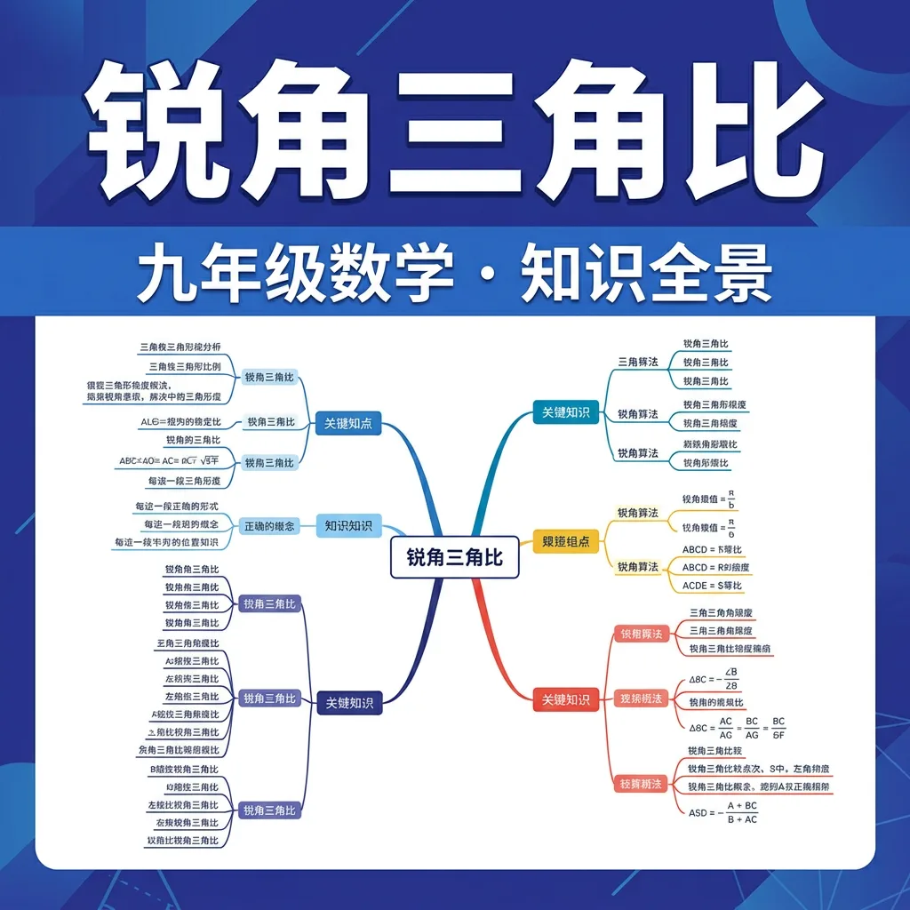

sin、cos、tan——三角函数的入门奥秘

1. 直角三角形中，斜边（c）是哪条边？
2. 在直角三角形ABC中，∠C=90°，则a²+b²=？（a,b为直角边，c为斜边）
And：我们知道勾股定理可以求边长，But 如果知道一个角的度数，能求出边长的比例吗？
Therefore：三角比就是为此而生的！先认识直角三角形的三条边……
（正弦）
（余弦）
（正切）
sin=对/斜，cos=邻/斜，tan=对/邻
英文记忆：SOH-CAH-TOA（Sin=Opposite/Hypotenuse，Cos=Adjacent/Hypotenuse，Tan=Opposite/Adjacent）
💪 直角三角形中，∠A是锐角，对边=3，斜边=5，则sin A=？
三角比的精确值不是总能算出来，But 对于30°、45°、60°这三个特殊角，我们可以精确计算！Therefore 记住这张表格至关重要。
| 角 α | sin α | cos α | tan α |
|---|---|---|---|
| 30° | 1/2 | √3/2 | √3/3 = 1/√3 |
| 45° | √2/2 | √2/2 | 1 |
| 60° | √3/2 | 1/2 | √3 |
📊 记忆规律：
sin值：0 → 1/2 → √2/2 → √3/2 → 1（从0°到90°单调递增）
cos值：1 → √3/2 → √2/2 → 1/2 → 0（从0°到90°单调递减）
记忆：sin30°=cos60°，sin45°=cos45°（互余角！）
💪 cos 45° = ？
And 三角比的值知道了，But 如何用它来求边长？Therefore 关键是建立方程：已知角和一条边，求其他边。
📝 例题：
直角三角形ABC中，∠C=90°，∠A=30°，斜边 c=10，求对边 a 和邻边 b。
sin 30° = a/c → a = c × sin30° = 10 × 1/2 = 5
cos 30° = b/c → b = c × cos30° = 10 × √3/2 = 5√3
💪 直角三角形，∠A=60°，邻边 b=4，则斜边 c=？
从距建筑物底部30m处，仰望楼顶的仰角为45°，求楼高（忽略人的身高）。
确认：若仰角改为60°，同样距离30m处，楼高为？
1. 在直角三角形中，对于锐角α，sin α = ？
2. sin 60° = ？
3. 直角三角形中，∠A=45°，斜边=10，则对边=？
4. tan 30° = ？
5. sin²α + cos²α = ？（任意锐角α）
声音、光波都是正弦波，三角函数无处不在
GPS和航海如何用三角函数定位
正弦定理、余弦定理——初中的延伸
用仰角和距离测量建筑高度的实践方法
锐角三角比是指在直角三角形中，锐角与边长的比值关系。具体包括正弦（sin）、余弦（cos）和正切（tan）三种基本形式。以锐角A为例，sinA=对边/斜边，cosA=邻边/斜边，tanA=对边/邻边。例如，在一个直角三角形ABC中，∠C=90°，AB=5，BC=3，AC=4，则sinA=BC/AB=3/5，cosA=AC/AB=4/5，tanA=BC/AC=3/4。这些比值仅与角度大小有关，与三角形的大小无关。锐角三角比是解决直角三角形问题的核心工具，广泛应用于测量、工程等领域。
正弦函数定义为直角三角形中锐角的对边与斜边的比值。其数学表达式为sinθ=对边/斜边。例如，在测量旗杆高度时，若测量者与旗杆底部距离为10米，仰角为30°，则旗杆高度=10×tan30°≈5.77米。正弦函数在波动、振动等物理现象中也有重要应用。如声波的振幅变化可以用正弦函数描述。在初中阶段，学生需要掌握特殊角（30°、45°、60°）的正弦值，并能解决简单的实际问题。需要注意的是，正弦函数值域为[-1,1]，但在锐角范围内（0°<θ<90°），sinθ的取值范围是(0,1)。
余弦函数表示直角三角形中锐角的邻边与斜边的比值，记作cosθ=邻边/斜边。以梯子靠墙问题为例：一个5米长的梯子与地面成60°角，则梯子顶端离地面高度为5×sin60°≈4.33米，梯子底部离墙距离为5×cos60°=2.5米。余弦函数在力学中用于分解力，如斜面上的物体重力可以分解为平行于斜面的分力（mgsinθ）和垂直于斜面的分力（mgcosθ）。特殊角的余弦值需要熟记：cos30°=√3/2，cos45°=√2/2，cos60°=1/2。与正弦函数类似，锐角的余弦值也随角度增大而减小。
正切函数定义为对边与邻边的比值，即tanθ=对边/邻边=sinθ/cosθ。例如，在道路建设中，坡度常用正切值表示。若某斜坡的倾斜角为15°，则其坡度约为tan15°≈0.27，即每水平前进100米，高度上升27米。正切函数的独特性质包括：定义域为θ≠90°+k×180°（k∈Z），在锐角范围内单调递增，且无最大值。特殊角的正切值：tan30°=√3/3≈0.577，tan45°=1，tan60°≈1.732。正切函数在解决高度差、仰角俯角等问题时特别有用，如测量建筑物高度或山谷深度等实际应用场景。
三个基本三角比之间存在重要转换关系：tanθ=sinθ/cosθ；sin²θ+cos²θ=1（毕达哥拉斯恒等式）。例如，已知sinA=3/5，且∠A为锐角，则cosA=√(1-(3/5)²)=4/5，tanA=(3/5)/(4/5)=3/4。这些关系式在简化计算、证明恒等式时非常有用。另一个重要关系是余角公式：sin(90°-θ)=cosθ，cos(90°-θ)=sinθ。应用实例：在解直角三角形时，若已知一个锐角和一边，可以利用这些关系求出其他元素。学生需要熟练掌握这些转换技巧，这是解决更复杂三角问题的基础。
30°、45°、60°这三个特殊角的三角函数值必须牢记。这些值可以通过特殊直角三角形推导得到：1）等腰直角三角形（45°-45°-90°）中，设直角边为1，则斜边为√2，故sin45°=cos45°=1/√2=√2/2，tan45°=1。2）30°-60°-90°三角形中，设30°对边为1，则斜边为2，60°对边为√3，因此sin30°=1/2，cos30°=√3/2，tan30°=1/√3=√3/3；sin60°=√3/2，cos60°=1/2，tan60°=√3。记忆口诀：正弦值从30°到60°是1/2、√2/2、√3/2递增；余弦值则递减。
锐角三角比在现实中有广泛应用：1）建筑测量：使用经纬仪测量建筑物高度，通过测量仰角和距离计算高度。例如，距离建筑物50米处测得仰角为38°，则高度≈50×tan38°≈39米。2）航海导航：确定船只位置时，通过测量两个固定点的角度进行三角定位。3）斜坡设计：道路、屋顶的坡度计算。如自行车道最大坡度通常不超过tanθ=0.08（约4.6°）。4）阴影计算：已知物体高度和太阳高度角，可计算影子长度。这些应用展示了三角比的实用价值，帮助学生理解数学与生活的联系。
现代计算器可以方便地计算任意锐角的三角比。操作步骤：1）确保计算器处于角度模式（DEG）；2）输入角度值；3）按相应的三角函数键。例如计算sin25°≈0.4226，cos52°≈0.6157。对于没有三角比键的计算器，可以使用泰勒展开式近似计算。在实际应用中，经常需要根据精度要求进行四舍五入，如工程测量通常保留4位小数。需要注意的是，计算反三角函数时（已知比值求角度），要使用sin⁻¹、cos⁻¹或tan⁻¹功能。例如，已知tanθ=0.5，则θ≈tan⁻¹0.5≈26.565°。
1. 直角三角形中，30°角的对边与斜边的比值是多少？2. 如果知道一个锐角的正弦值是0.6，能否确定这个角的度数？3. 在测量山坡坡度时，你会选择使用哪个三角比？
1. 在△ABC中，∠C=90°，AC=12，BC=5，求sinA和tanB的值。2. 已知sinθ=4/5，且θ为锐角，求cosθ和tanθ的值。3. 某楼梯与地面成35°角，若垂直高度为3米，求楼梯的水平投影长度（精确到0.1米）。
常见误区：1）混淆邻边和对边：特别是在不同锐角视角下容易混淆，错因在于没有固定参考角。诊断方法：明确标注所讨论的锐角。2）认为三角函数值可以大于1：实际上在锐角范围内sinθ和cosθ都小于1，误区源于对定义理解不深。3）角度制与弧度制混淆：计算时未检查计算器模式，导致结果错误。诊断建议：始终确认计算器处于DEG模式。
迁移挑战：设计一个校园测量活动方案，要求使用三角比测量至少三种不同高度的物体（如旗杆、教学楼、大树）。需包括：1）测量原理分析；2）工具清单；3）具体测量步骤；4）数据处理方法；5）可能的误差来源探究。
先独立作答，再点选项查看对错与错因。
在直角三角形ABC中，∠C=90°，AB=5，AC=3，则sinB的值是？
已知tanα=4/3，则sinα的值是？
在测量旗杆高度的问题中，已知旗杆影子长6米，小明身高1.5米，影子长1.2米，旗杆高度约为？
在直角三角形中，____角的正弦值等于1
答案：直
直角的正弦值为对边/斜边，而斜边就是直角边本身，所以值为1
若sinα=0.8，则cosα=____
答案：0.6
根据sin²α+cos²α=1，cosα=√(1-0.8²)=0.6
下列关于锐角三角比的描述，正确的是？
请设计一个实验，测量不同角度下正弦、余弦、正切值的变化规律